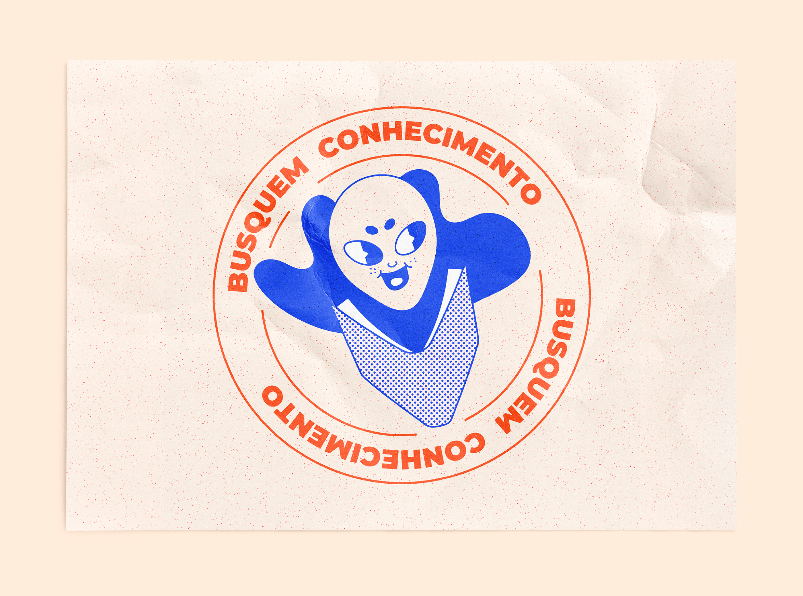
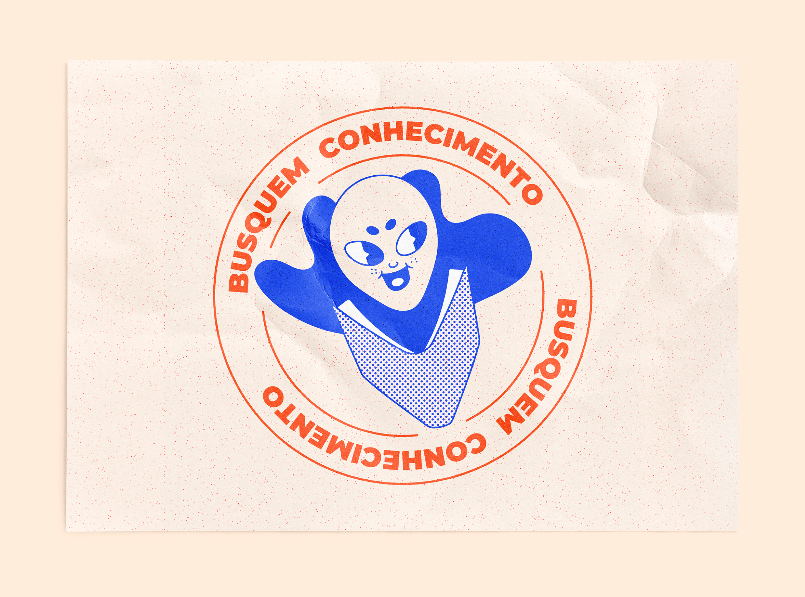

​​​​​​​Social media posts that constitute part of Senac Sao Paulo's initiative to publicize their language courses.
The intention was to communicate with dynamism and informality, using elements that are known by internet users and draw attention to the courses in a playful way, therefore the arts were created with Brazilian pop culture references, such as memes and vernacular art, and retro stylization through risograph effect and rubber hose illustrations.
The blue and orange colors are part of Senac's institutional palette, with changes on tonality to preserve both the legibility and proposed aesthetics.
Senac Idiomas
🇧🇷 Postagem para redes sociais que integra uma iniciativa do Senac São Paulo para divulgar os cursos de idiomas da instituição.
A intenção era comunicar com dinamismo e informalidade através de elementos familiares aos usuários da internet, chamando atenção para os cursos de forma lúdica. Portanto, foram desdobradas artes com referências à cultura popular brasileira, como memes e arte vernacular, com estilização retrô através do acabamento com efeito de risografia e ilustrações em estilo rubber hose.
As cores azul e laranja condizem com a paleta institucional do Senac, com mudança na tonalidade para preservar a legibilidade e estética proposta.
OCTOBER, 2022.
 
